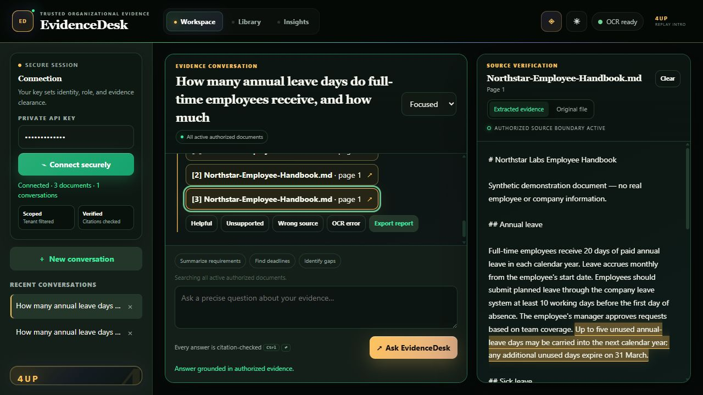

Locate the right passage
Search across uploaded documents, including image-only PDFs through OCR.
EvidenceDesk is a secure document assistant. You ask a question in normal language; it finds relevant passages in approved organizational documents, answers from those passages, and shows exactly where the answer came from.
A policy may be buried in a handbook, a scanned PDF, or an old version of a procedure. A normal chatbot can sound certain even when it is wrong. EvidenceDesk changes the success test: the answer is useful only when a person can inspect the supporting evidence.
Search across uploaded documents, including image-only PDFs through OCR.
The model receives selected excerpts instead of being invited to guess from memory.
Every supported claim links back to the document and passage that supports it.
This is retrieval-augmented generation, usually shortened to RAG. “Retrieval” means finding relevant evidence first. “Generation” means writing a clear answer from that evidence.

This detail matters. Hiding a citation after generation is too late—the model may already have seen restricted text. EvidenceDesk filters documents before searching and before building the model prompt.
The MVP supports development authentication and a production-shaped OIDC/JWT path. Real deployment should connect this to the organization’s identity provider.
Tenant, role, and clearance metadata travel with each document so restricted material is excluded early.
File limits, type validation, safe storage names, prompt-injection defenses, audit events, and controlled error messages reduce common risks.
Python routes handle uploads, questions, conversations, feedback, health checks, and document operations. FastAPI also creates interactive API documentation.
The local MVP stores metadata and uses SQLite full-text search. It is easy to run on a laptop; a larger deployment should move to managed PostgreSQL and a suitable retrieval index.
PyMuPDF reads PDFs and Tesseract recognizes text on scanned pages. The UI reports when OCR was used rather than pretending every extraction was perfect.
A fixed retrieve → expand → rank → extract → verify workflow controls the evidence path. An external language model is used only when configured; a deterministic local mode keeps tests reliable.
Tests check authorization, grounding, citations, refusals, ingestion safety, OCR behavior, API behavior, and coverage. GitHub Actions repeats these checks on every push.
Docker provides a consistent runtime. Configuration lives in environment variables, while secrets and local databases stay outside version control.
EvidenceDesk does not give a free-roaming agent permission to invent tools or wander through systems. The useful intelligence is in a bounded sequence with visible stages and predictable failure behavior.
The same stages run in the same order, which makes problems easier to diagnose and test.
Retrieved passages and citations expose why an answer was produced.
If authorization or evidence checks fail, the workflow stops or refuses instead of improvising.
This is an architecture path, not a claim that this repository is already running at enterprise scale on AWS.
No. The key engineering work is ingestion, metadata, authorization, search, evidence selection, citations, refusal behavior, tests, and operating boundaries around the model.
Organizational questions often depend on private, versioned documents. A model’s general memory is not the source of truth. EvidenceDesk makes approved source material the center of the workflow.
The assistant should say that it lacks sufficient evidence. A useful refusal is safer than a confident invention.
Yes, when the optional local OCR tools are installed. The interface reports whether OCR was used and any extraction warning.
Connect enterprise identity, use managed storage and databases, run background ingestion jobs, add malware scanning, improve retrieval evaluation with real approved test sets, complete security review, and establish monitoring and incident procedures.